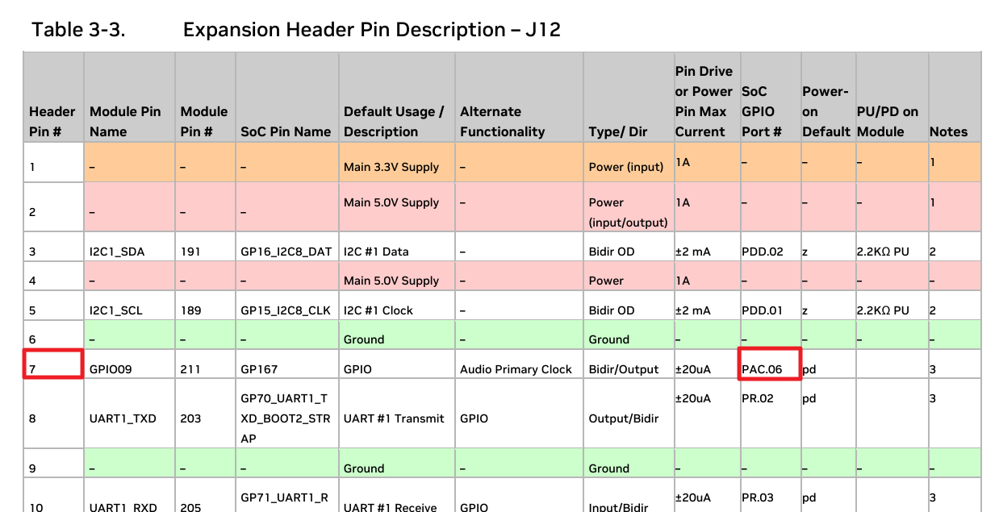

GPIO 번호
PAC.06에 해당하는 GPIO 번호를 확인하고, 커널 모듈을 작성하여 삽입 시 ON, 제거 시 OFF하도록 하는 과정을 설명하고 코드를 작성해보겠습니다.
1. GPIO 번호 확인
1) 헤드핀의 핀 이름 확인
Jetson Orin Nano Developer Kit Carrier Board Specification ( SP-11324-001_v1.3 )에서 핀에 대한 정보를 확인한다.

7번 핀에 연결된 물리적 핀의 이름은 PAC.06 으로 되어 있다. 7번 핀에 LED를 연결하고, 동작 테스트를 확인한다.
2) 할당된 GPIO 번호 확인
sudo cat /sys/kernel/debug/gpio
예를 들어, PAC.06이 gpiochip0의 492번 핀이라면, 해당 GPIO 번호는 492이 됩니다.
jetson@ubuntu:~$ sudo cat /sys/kernel/debug/gpio
[sudo] password for jetson:
gpiochip0: GPIOs 348-511, parent: platform/2200000.gpio, tegra234-gpio:
gpio-348 (PA.00 |fixed-regulators:reg) out lo
gpio-349 (PA.01 )
gpio-350 (PA.02 )
gpio-351 (PA.03 )
gpio-352 (PA.04 )
gpio-353 (PA.05 )
gpio-354 (PA.06 )
gpio-355 (PA.07 )
gpio-356 (PB.00 )
~~~
gpio-489 (PAC.03 )
gpio-490 (PAC.04 )
gpio-491 (PAC.05 )
gpio-492 (PAC.06 )
gpio-493 (PAC.07 )
gpio-494 (PAD.00 )
gpio-495 (PAD.01 )
gpio-496 (PAD.02 )
~~~
2. 커널 모듈 작성
아래 커널 모듈은 gpio_number 변수에 확인한 GPIO 번호를 설정하여, 모듈을 삽입하면 GPIO가 HIGH(ON), 제거하면 LOW(OFF)로 설정합니다.
🔹 hello.c 작성
#include <linux/init.h> // init and exit macros
#include <linux/module.h> // module macros
#include <linux/kernel.h> // printk
#include <linux/gpio.h> // GPIO 제어를 위한 헤더
#define GPIO_NUMBER 492 // PAC.06에 해당하는 GPIO 번호
// 모듈 정보
MODULE_LICENSE("GPL");
MODULE_AUTHOR("Your Name");
MODULE_DESCRIPTION("GPIO Control Kernel Module for PAC.06");
MODULE_VERSION("1.0");
// 모듈 초기화 함수
static int __init hello_init(void) {
int ret;
printk(KERN_INFO "Hello, Kernel World! Initializing GPIO %d\n", GPIO_NUMBER);
// GPIO 요청
ret = gpio_request(GPIO_NUMBER, "hello_gpio");
if (ret) {
printk(KERN_ERR "Failed to request GPIO %d\n", GPIO_NUMBER);
return ret;
}
// GPIO를 출력으로 설정하고 HIGH로 설정
ret = gpio_direction_output(GPIO_NUMBER, 1);
if (ret) {
printk(KERN_ERR "Failed to set GPIO %d as output\n", GPIO_NUMBER);
gpio_free(GPIO_NUMBER);
return ret;
}
printk(KERN_INFO "GPIO %d set to HIGH\n", GPIO_NUMBER);
return 0;
}
// 모듈 종료 함수
static void __exit hello_exit(void) {
printk(KERN_INFO "Goodbye, Kernel World! Setting GPIO %d to LOW\n", GPIO_NUMBER);
// GPIO를 LOW로 설정
gpio_set_value(GPIO_NUMBER, 0);
gpio_free(GPIO_NUMBER);
printk(KERN_INFO "GPIO %d set to LOW and freed\n", GPIO_NUMBER);
}
// 초기화 및 종료 함수 등록
module_init(hello_init);
module_exit(hello_exit);
3. 모듈 컴파일 및 실행
🔹 Makefile 작성
obj-m += hello.o
KDIR := /lib/modules/$(shell uname -r)/build
PWD := $(shell pwd)
all:
$(MAKE) -C $(KDIR) M=$(PWD) modules
clean:
$(MAKE) -C $(KDIR) M=$(PWD) clean
🔹 컴파일
make
🔹 모듈 로드
sudo insmod hello.ko
🔹 모듈 제거
sudo rmmod hello
🔹 로그 확인
dmesg | tail -n 20
이렇게 하면 모듈을 삽입할 때 GPIO가 HIGH, 제거할 때 LOW로 설정됩니다.